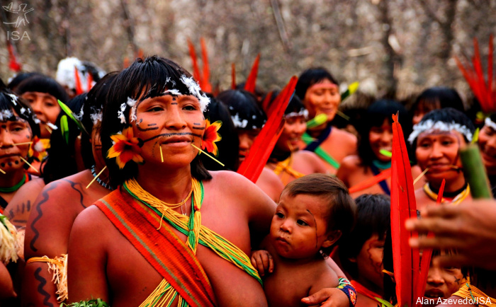
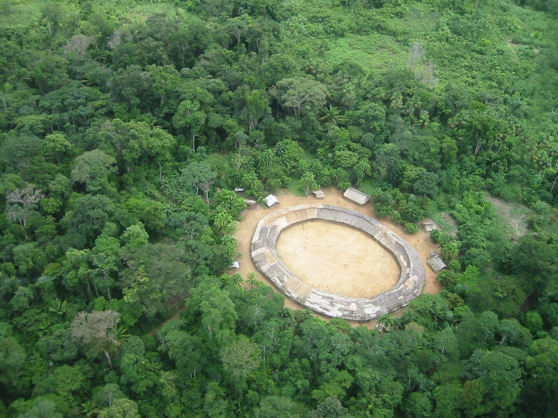

Os Yanomami
Para os Yanomami, "urihi", a terra-floresta, não é um espaço de exploração econômica. Trata-se de uma entidade viva, que está inserida dentro de um visão cosmológica de relações entre humanos e não-humanos.
Hoje, o povo yanomami é destaque e precisa ser lembrado, pois possuem uma alta relevância na proteção da biodiversidade da floresta amazônica, possuindo uma ligação ainda mais forte com a floresta.

Disponíel em: https://blog.brkambiental.com.br/preservacao-da-amazonia/
Figura que mostra área da Amazônia.
Nome
O nome "Yanomami", vem da palavra yanomãmi que significa "seres humanos".
Se difere yaro (animais de caça), yay (seres invisíveis ou sem nome) e napë (inimigo, estrangeiro, "branco").
População e Localização
Segundo informações do DSEI, existem hoje cerca de 31 mil habitantes yanomami, divididos em 384 aldeias. Estão localizados no Norte da Floresta Amazônica, em um território de aproximadamente 192.000 km2, situados em parte da Venezuela e parte do Brasil.
No Brasil, está região compreende aos estados de Roraima e Amazonas.
Mito de Origem
Eles remetem sua origem a Omama que se relacionou com a filha do monstro aquático Tëpërësiki dando origem ao povo yanomami, bem como aos "xapiripë", que são espíritos que auxiliam os pajés. Já o irmão ciumento de Omama, Yoasi, é a origem da morte e dos males do mundo.

Dispinível em: https://site-antigo.socioambiental.org/pt-br/noticias-socioambientais/ehuana-yanomami-fortalecendo-os-conhecimentos-tradicionais-e-defendendo-seu-territorio
Figura que mostra mulheres Yanomami em uma palestra sobre a tradição e defesa do seu território.
Contanto com os Brancos
Os primeiros contatos ocorreram nas décadas de 1910 a 1940. Entre 1940 e 1960, a abertura de postos do SPI e a realização de missas católicas estabeleceram um contanto fixo com eles.
Embora estes postos tenham proporcionado aos yanomami o acesso a objetos manufaturados e assistência sanitária, também ocasionou surtos de gripe, sarampo e coqueluche entre eles.
A descoberta em 1975 de ouro e metais preciosos na região é o que mais afeta os yanomami, pois fortaleceu a exploração que já vinha ocorrendo no local. Ademais, resultou no principal problema enfrentando desde aquela época até os dias de hoje por eles que é o garimpo ilegal.
Os garimpeiros constroem estradas de terra, modificam o espaço e desmatam a floresta, além disso, os rios ficam poluídos por causa do mercúrio presente nos metais.
Além da invasão de suas terras, os yanomami também sofrem com as doenças que o contanto com os garimpeiros e a poluição dos rios provocam.
Organização Social e Política
A sociedade dos Yanomami não apresentam uma hierarquia de poder. Eles se organizam em diferentes comunidades ou unidades que se comumicam entre si. Cada uma possuem suas regras de ordem e convivência.
Em cada uma dessas aldeias se estabelecem mais de uma família, e as decisões são tomadas por um consenso.
As casas são retangulares ou casas coletivas, neste caso são grandes círculos abertos no meio.

Vista aérea da aldeia Demini do povo Yanomami, Amazonas. Foto: Marcos Wesley/CCPY, 2005
Figura que mostra uma aldeia Yanomami.